Tactile:Wood · The species workshop
The leaf texture, flowers and fruit, the library, and who all of it belongs to.
The side panels change to make room for the texture editor: the leaf settings on the right, the texture choices on the left.
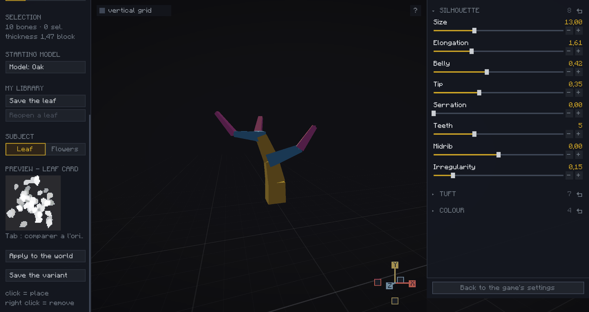
There are two ways to create your leaf texture: start from a vanilla model and apply your settings to it, or build a model with the flower editor and apply your settings to that. We will look at both, starting with the first.
Under STARTING MODEL, click the Model button. Then pick whichever model you like: the species does not matter, only its contents do, the one whose shapes come closest to what you are after.
The leaf itself is entirely redrawn, so you will not find the game's leaf in your result. Your leaves are, however, sown inside the holes of that texture: it is what gives the tuft its overall cutout, which is why it is worth picking one whose mass resembles what you want.
You can also start from your own image: drop a PNG into the leaves/images folder of your pack and it will show up in the sheet next to the game's textures. The sheet is re-read every time it opens, no need to restart the game. Your image never enters the atlas, what goes there is the card drawn from it.
Changing the starting texture halfway erases all your settings: the new texture's measurements replace them, and the link to your leaf file is cut. Pick your base first, tune afterwards.
Further down you will find a live preview of your foliage. The tree's own foliage, on the other hand, only updates when you click Apply to the world. Hold TAB at any time to compare before and after, release to come back.
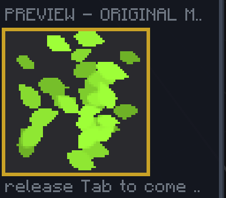
The right panel holds three groups:
Here the starting texture is bamboo, picked for its wide, well defined leaves. Oak leaves are elongated and made of broad teeth.
Silhouette:
Tuft:
Colour:
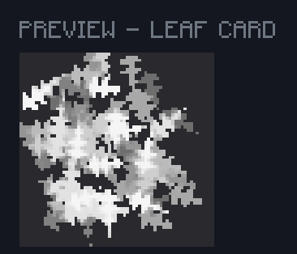
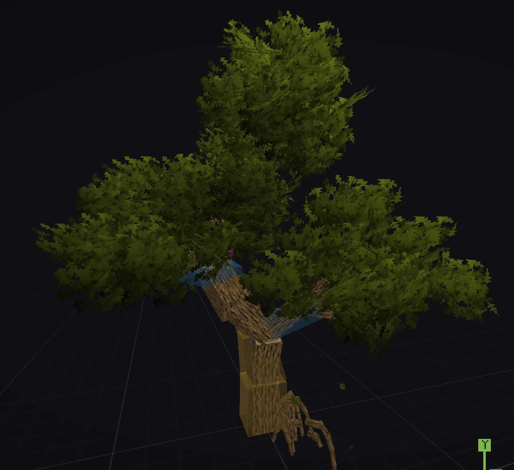
The workshop lets you add flowers and fruit to your trees. Under SUBJECT, click Flowers: a new interface appears on screen and the left panel gains a few controls.
+ Add a fruit adds a whole fruit, and you can add as many as you want. Under the selected fruit, whose number is boxed in gold, you can add, remove or duplicate the elements of that fruit.
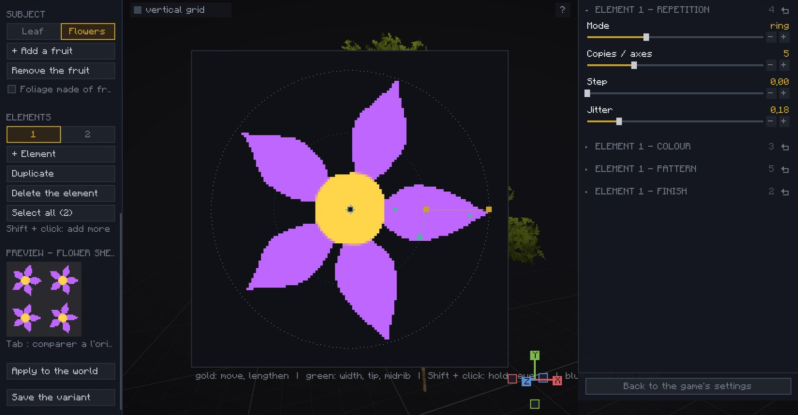
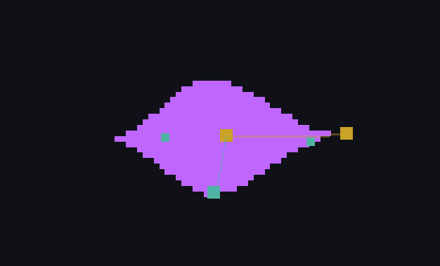
The handles turn with the element: you recognise them by their colour, not by their position.
Shift + click holds several elements at once: the value shown on the right is the active element's, the value you set goes to every element you hold.
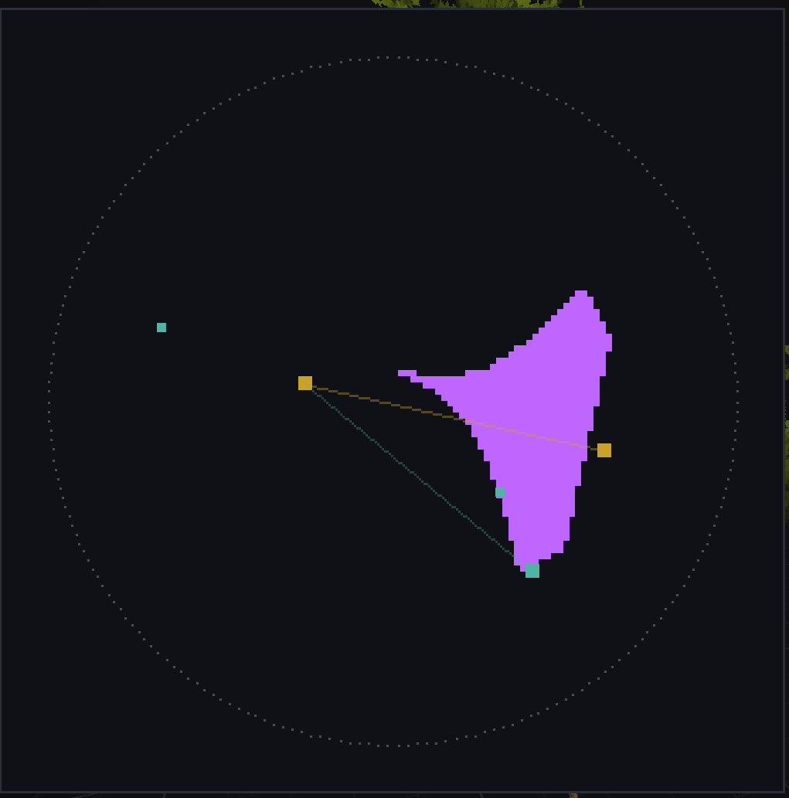
On the right panel, repetition tab. Four modes are available:
The repetition axis, the blue cross, can be moved freely.
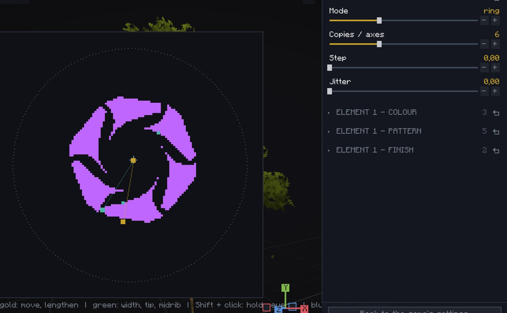
The pattern tab adds an effect of your choice on the texture: flat, gradient, volume, border, midrib or speckled. The texture ends up compressed, so this mostly adds a little detail to the colours and will stay discreet.
You can add as many elements as you want. An element's layer order is set in the last tab, draw order.
Every new fruit compresses the texture a little more: the more fruits, the less detail each of them gets.
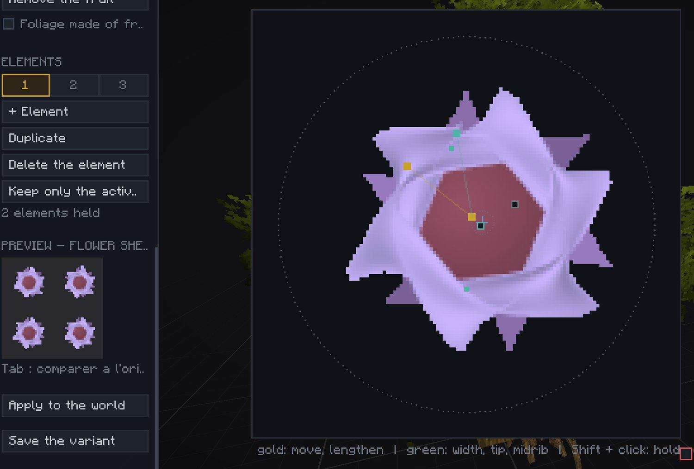
Back in Foliage mode, three Fruit tabs are waiting for you, where you decide how flowers are placed, along with their size, their rotation and their density.
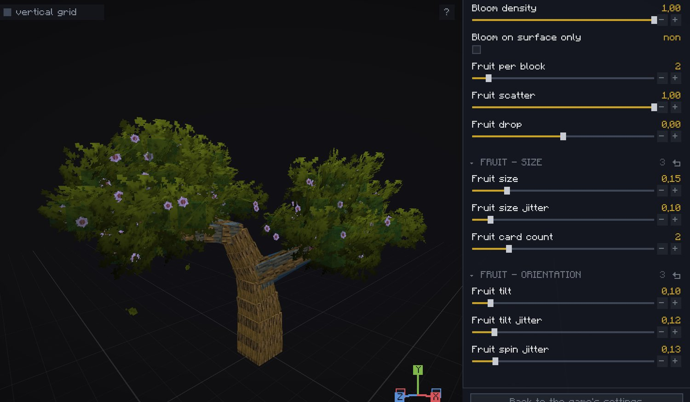
This is the second option announced at the start. You can turn your flowers into the texture itself: tick Foliage made of fruits, then go back to the Leaf tab to tune it as you please. In that case, remember to untick Biome tint, in the Colour group of Foliage mode.
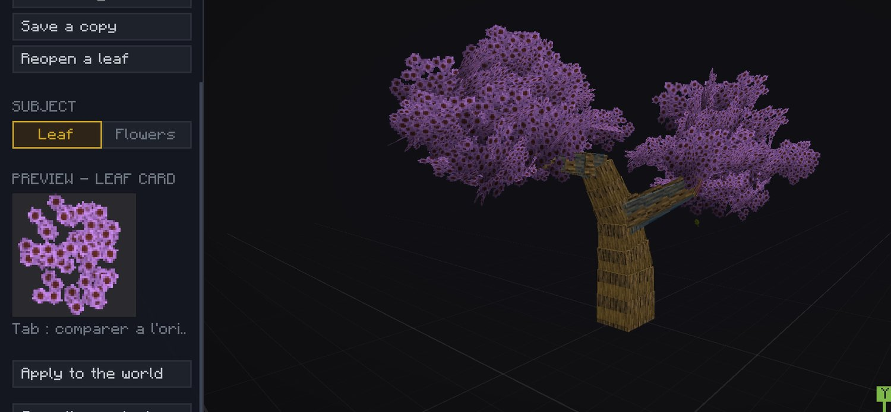
A leaf is a material: it can be reused from one tree to the next, and it has a folder of its own.
The file name comes from the species you are editing. A second oak leaf therefore becomes oak-2: nothing is ever overwritten without telling you.
A leaf does not declare what it replaces: the model is what cites it. It leaves with Save the variant, just like the shape and the foliage.
That is what lets two models of the same tree grow side by side, each with its own leaf, and two packs dress the same oak without stepping on each other.
Remember to use Apply to the world to see your leaf on the tree: it is the only moment the game reloads its images, and therefore the only one that takes a second.
The help channel is there for that, and other people's creations are often the best answer.
Join the Discord